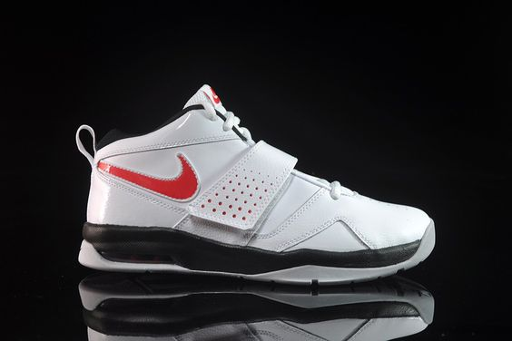

Con su característico diseño minimalista, las Zapatillas Nike Air Zoom Pegasus 35 II fueron renovadas para ofrecer máximo soporte y rendimiento durante la carrera.
Cuando hablamos de la Nike Mercurial hablamos de una bota de fútbol pionera. Una bota diseñada para los jugadores más veloces sobre el terreno de juego cuyo jugador abanderado fue Ronaldo Nazario allá por el mundial de Francia 98. Como toda línea deportiva es indispensable que vaya evolucionando conforme a las necesidades de los jugadores y las tecnologías existentes. En este caso Nike nos presenta la última entrega en la línea de Nike Mercurial, la Nike Mercurial Vapor 360 y la Nike Mercurial Superfly 360.
Un complemento que define de manera sobria y distinguida la filosofía de la moda urbana, un tipo de zapatillas donde el cuerpo es de un color blanco elegante que se hunde en un suela de goma marrón que le da ese toque urbano y jovial.